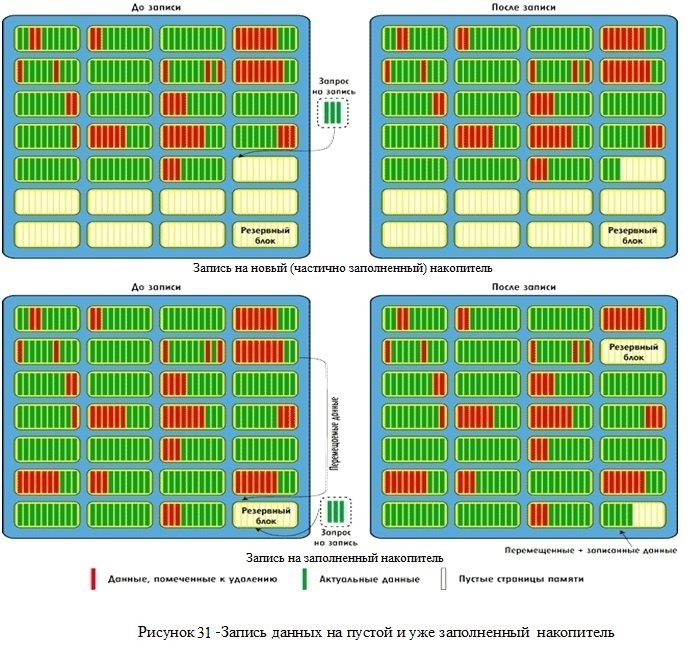
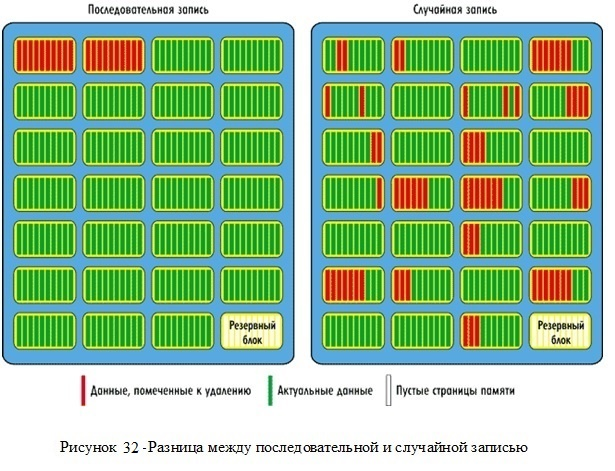

Для того чтобы понять как работают SSD накопители, в первую очередь нужно знать работу ПК. Точнее как система работает с памятью. Ведь SSD накопители в компьютере работают не только как хранилище данных, но и как место размещения виртуальной памяти.
Память в компьютере иерархическая, то есть, она состоит из нескольких уровней. Первый уровень - процессор, который отвечает за выполнение инструкции и работу с данными на жестком диске. Чем ближе память к процессору, тем она дороже, меньше, но гораздо быстрее. Система наиболее часто используемые данные располагает как можно ближе к микропроцессору.
Дальше в иерархии стоит оперативная память. Время доступа к которой, в тысячи раз меньше, чем на жестком диске. Обратите внимание, если процессору для запуска приложения требуются данные расположенные на жестком диске, вам придется какое-то время подождать.
SSD и самые современные Pcie SSD-накопители этот эффект смягчают, обеспечивая скорость доступа к данным и их передачу выше, чем обычные жесткие диски.
Встроенный контроллер, обрабатывает доступ к различной флэш-памяти. Он получает команды из операционной системы и интерпретирует их для доступа к данным. Для программ все это прозрачное и не затрагивает их.
Чтобы понять, как работает SSD накопитель необходимо знать, как он хранит информацию. Устройство разделено на ячейки обычно размером в 8KB. 256 ячеек организованы в блок, общим размером в 2 MB. Бывают и другие варианты.
Минимальный размер доступной для чтения информации, одна ячейка. Процесс чтения очень быстр, так как твердотельные накопители всегда лучше читают, чем пишут. По этой причине жесткий диск SSD прилично ускорит загрузку операционной системы и запуск приложений, так как в этом случае большинство происходящих операций - чтение.
Процесс записи отличается от процесса чтения. Минимальный размер доступной информации аналогичен процессу чтения. Если ячейка пуста, запись идет напрямую. Если ячейка уже содержит информацию и требуется перезапись, ячейка сначала очищается. Проблема в том, что очищение производится на уровне блоков, а не ячеек.
К примеру, представьте, что вы хотите изменить данные в файле. Для того чтобы его переписать, компьютер должен сначала прочитать весь блок, передать его как кэш в память (чтобы не потерять информацию), потом полностью очистить блок, изменить данные и записать их.
По этой причине, новый SSD накопитель работает быстрее. То есть совершенно пустой SSD, работает быстрее уже заполненного.
Процесс записи информации на SSD-накопители сильно отличается от аналогичного процесса с HDD-дисками. С этим, к примеру, связано то, что производительность SSD-накопителей меняется со временем, а скорости последовательного и выборочного доступа к flash-памяти отличаются друг от друга. Для того чтобы объяснить эти явления, рассмотрим более подробно процессы записи на HDD - и SSD - накопители.
В случае жестких дисков HDD наименьшая единица информации, которой оперирует система управления жесткого диска, носит название сектора или блока. В HDD размер сектора равен 4 Кбайт (в новых моделях) или 512 байт. Для адресации секторов (блоков) на диске используется метод LBA (Logical Block Addressing), при котором каждый блок, адресуемый на жестком диске, имеет свой порядковый номер — целое число, начиная с нуля (то есть первый блок LBA = 0, второй LBA = 1 и т.д.). Количество LBA-блоков на диске определяется количеством цилиндров, дорожек, секторов и головок чтения/записи. Так, расчет номера LBA-блока производится по формуле:
LBA = [(Cylinder x No_of_heads + Heads) x Sectors/track] + [Sector – l),
где:
Преимущество метода LBA заключается в том, что системному контроллеру нет необходимости учитывать геометрию самого жесткого диска (количество цилиндров, сторон, секторов на цилиндре).
Теперь рассмотрим процесс записи данных на HDD-диск. Если данные записываются, к примеру, в блок LBA c определенным номером, то это означает, что они будут размещаться в определенном месте (на определенном цилиндре, дорожке и секторе) на диске. И сколько бы раз ни перезаписывался этот блок, данные всегда будут помещаться в одно и то же физическое место на диске, соответствующее номеру блока LBA. Если данные записываются в LBA-блоки с разными номерами, то это означает, что на диске они будут размещаться в разных местах, которые соответствуют номерам LBA-блоков. Если, к примеру, требуется записать на HDD-диск какойлибо файл, то первоначально он разбивается на блоки, каждому из которых присваивается определенный логический LBA-номер, а каждому логическому LBA-номеру соответствует жестко заданное место на диске.
Если же данные удаляются, то есть пользователь удаляет файл на уровне операционной системы, то на самом деле они не удаляются с диска, а просто соответствующие данным логические LBA-адреса на уровне операционной системы помечаются как свободные и могут в дальнейшем использоваться (данные могут перезаписываться). Важно, что контроллер самого HDD-диска ничего об этом не знает, однако для HDD-диска это не проблема, поскольку переписать LBA-блоки для HDD-диска не составляет труда.
В случае SSD-накопителяя всё совсем по-иному. Дело в том, что в SSD-накопителях нет однозначного соответствия между логическим номером записываемой порции данных (страницы) и ее физическим расположением во flash-памяти. Еще раз напомним, что запись данных во flash-память производится страницами, а удаление – только блоками, причем для записи в уже использованную страницу ее предварительно необходимо очистить (стереть данные).
Во flash-памяти данные преимущественно записываются последовательно, то есть они всегда записываются порциями по 4 Кбайт в следующую по порядку свободную страницу flash-памяти. При этом логический адрес записываемой страницы (LBA) сопоставляется с физическим адресом (PBA), то есть с адресом расположения во flash-памяти.
Для соответствия между логическими и физическими адресами (LBA-PBA mapping) предназначена специальная таблица соответствия логических и физических адресов. Эта таблица размещается в оперативной памяти SSD-накопителя.
При получении запроса на запись контроллер выделяет соответствующее число свободных страниц и заносит в таблицу соответствие между LBA- и PBA-адресами. Если же данные перезаписываются (то есть требуется записать данные с логическими адресами, которые уже заняты), то контроллер SSD-накопителя выделяет следующие свободные страницы памяти, а в таблице соответствия логических и физических адресов помечает страницы, в которые эти данные были записаны ранее, как содержащие устаревшую информацию. Важно, что при этом реально страницы с устаревшими данными не перезаписываются (как в HDD-дисках) и не удаляются.
Если же данные удаляются, то есть пользователь удаляет файл на уровне операционной системы, то, как и в случае HDD-диска, данные не удаляются с диска, а просто соответствующие данным логические LBA-адреса на уровне операционной системы помечаются как свободные и в дальнейшем могут быть использованы (данные могут перезаписываться). Важно, что контроллер самого SSD-накопителя ничего об этом не знает и считает соответствующие страницы памяти занятыми. То есть соответствующие страницы памяти не помечаются к удалению в таблице соответствия LBA- и PBA-адресов. Запись на SSD-накопитель в основном происходит последовательно, поэтому существует большая разница между записью на новый накопитель (на который данные еще не записывались) и на уже заполненный накопитель. Заполненный накопитель с точки зрения пользователя может быть пустым, поскольку удаление данных с накопителя на уровне операционной системы еще не означает их реального удаления из flash-памяти.
При случайной записи на пустой (или частично занятый) SSD-накопитель всё происходит очень просто. Все данные пишутся последовательно в страницы памяти, заполняя тем самым блоки памяти. Причем даже в том случае, если производится перезапись данных, они последовательно записываются в следующие по порядку свободные страницы памяти, а в таблице соответствия логических и физических адресов те страницы, в которые эти данные были записаны ранее, помечаются как содержащие устаревшие данные (помечаются к удалению).
Естественно, при таком последовательном алгоритме записи неизбежна ситуация, когда весь накопитель будет заполнен, то есть на нем не останется блоков со свободными страницами, а будут лишь блоки, содержащие заполненные страницы с актуальными данными, и страницы, помеченные к удалению (рис. 31).
Казалось бы, почему нельзя записывать новые данные в те страницы flash-памяти, которые содержат устаревшие данные и помечены на удаление? Всё дело в том, что в архитектуре flash-памяти для того, чтобы произвести запись данных в занятую страницу памяти, ее нужно предварительно очистить. Однако, как мы помним, если запись и чтение во flash-памяти осуществляются страницами, то удаление возможно только блоками. И если нам нужно очистить какую-то страницу памяти, то придется стереть весь блок, в котором находится эта страница. Однако данный блок может содержать и страницы, помеченные на удаление (страницы с устаревшими данными), и страницы с актуальными данными, которые удалять нельзя.
Для того чтобы использовать блоки со страницами, помеченными на удаление, применяется метод переноса данных с помощью пустых и резервных блоков. Даже если пустых блоков в SSD-накопителе уже не осталось, всегда имеется определенное количество резервных блоков, применяемых для переноса данных. Чтобы удалить страницу с устаревшими данными, прежде нужно переместить из соответствующего блока страницы с актуальными данными в резервный свободный блок и уже потом удалить весь блок, содержащий страницы с устаревшими данными. Соответственно мы получаем частично занятый блок с перемещенными данными, доступный для записи, и пустой блок, который становится резервным. Однако в результате такого перемещения данных получается, что на SSD-накопитель приходится записывать больше данных, чем требуется.
К примеру, если требуется записать всего одну страницу (4 Кбайт) и для этого нет свободного блока, то прежде нужно найти блок со страницами, помеченными на удаление. Если имеется блок, в котором помечена на удаление всего одна страница, то нужно переместить из этого блока в резервный блок остальные 127 страниц и дополнить его той одной страницей, которую нужно было записать. Затем блок со страницей, помеченной на удаление, стирается и становится резервным. Получается, что для записи всего одной страницы (4 Кбайт) приходится записывать 128 страниц (512 Кбайт), и это не считая того, что время тратится еще на чтение всего блока и его стирание. Именно поэтому скорость записи на новый накопитель (на который данные никогда не записывались) и на уже заполненный накопитель может кардинально различаться. Для того чтобы подчеркнуть принципиальную разницу в скорости записи на пустой и заполненный диски, используется такой показатель, как коэффициент усиления записи (Write Amplification), который показывает, во сколько раз больше данных приходится записывать, чем реально требуется. При записи на пустой накопитель коэффициент усиления записи равен единице, а при записи на заполненный накопитель он всегда больше единицы – его значение может колебаться от 2 до 25.
Рассмотренный пример является несколько идеализированным – в реальности механизм перемещения данных, то есть избавления от блоков со страницами, помеченными к удалению, используется по мере заполнения накопителя, причем с помощью как пустых, так и резервных блоков. Эту процедуру называют сбором «мусора» (Garbage Collection).
Существуют различные алгоритмы процедуры Garbage Collection, и разница между ними заключается в том, каким именно образом выбирается блок, используемый для перемещения данных. Понятно, что это должен быть блок, содержащий как можно больше страниц памяти, помеченных к удалению. Именно в этом случае можно минимизировать количество операций записи и, тем самым, уменьшить показатель Write Amplification. Кроме того, учитывая, что количество циклов перезаписи ячеек flash памяти ограничено, процедура Garbage Collection с выбором блока с наибольшим количеством страниц, помеченных к удалению, позволяет продлить время жизни SSD-накопителя.
Казалось бы – что мешает просто выбирать блок с максимальным количеством страниц, помеченных к удалению. Но для этого нужно просмотреть всю таблицу соответствия LBA-PBA, однако это очень трудоемкая операция для контроллера, которая требует достаточно много процессорных циклов. Такой способ выбора блоков на удаление не оптимален и ведет к снижению производительности, поэтому используются алгоритмы окна, когда анализируются не все блоки, а лишь некоторая их часть (окно блоков) с наибольшей вероятностью содержащая блок с максимальным количеством страниц, помеченных к удалению.
Откуда берутся те самые резервные блоки, которые применяются для перемещения данных? Если имеется SSD-накопитель, емкость которого составляет 160 Гбайт, то реально для записи доступно 160 десятичных, а не двоичных гигабайт. То есть реально емкость накопителя, доступная для записи, составит 160 000 000 000 байт, а не 171 798 691 840 байт, как в двоичной интерпретации (в двоичной интерпретации 1 Кбайт = 1024 байт). Разница между емкостью накопителя в двоичной и десятичной интерпретации как раз и составляет резерв блоков для перемещения данных (резервная область). В случае SSD-накопителя размером 160 Гбайт резервная область равна 11 798 691 840 байт, или примерно 11 Гбайт в двоичной интерпретации. Важно отметить, что резервная область накопителя – это не какой - то выделенный участок блоков памяти. Резервные блоки как бы «размазаны» по всему накопителю, более того – их расположение динамически меняется во времени. Любой блок памяти может быть и резервным, и доступным для записиp>
Если при записи в какой - то блок памяти выдается ошибка, то он помечается как Bad-блок и в дальнейшем не используется. Причем объем доступного для записи места при этом не уменьшается, поскольку все Bad-блоки автоматически помечаются как резервные. То есть, если по мере эксплуатации SSD-накопителя в нем увеличивается количество Bad-блоков, это автоматически означает, что уменьшается размер резервной области накопителя. Естественно, это приводит к тому, что производительность накопителя в операциях записи начинает снижаться, поскольку от количества резервных блоков зависит скорость записи.
Первый феномен SSD-накопителей, заключается в том, что скорость записи на новый и ранее использовавшийся накопители может заметно различаться. Есть и другой феномен: разница в скорости последовательной и случайной записи. Казалось бы, если данные записываются на SSD-накопитель преимущественно последовательным образом, то можно вообще ли говорить о случайной записи? Представьте себе последовательную (с точки зрения операционной системы) запись большого массива данных на пустой накопитель. То есть запись, при которой все логические LBA-адреса заполняются последовательно.
В этом случае все физические блоки памяти будут заполняться последовательно, а если данные перезаписываются, то опять-таки будут образовываться блоки, целиком состоящие из страниц, помеченных к удалению. В этом случае не требуется использовать технологию перемещения данных, поскольку если блок состоит только из страниц, помеченных к удалению, то его можно стереть целиком, не перемещая из него никаких данных. Понятно, что в таком случае (то есть в случае последовательной записи) коэффициент усиления записи равен 1 и достигается максимальная скорость записи.
В случае случайной записи даже на пустой накопитель, хотя данные и записываются преимущественно последовательным образом, пока не будет заполнено всё доступное пространство накопителя, неизбежно возникают операции перезаписи данных мелкими порциями, и в результате блоки данных содержат как страницы с нужными данными, так и страницы, помеченные к удалению. Это как раз та ситуация, которая была рассмотрена ранее, то есть по мере заполнения накопитель начинает использоваться механизм перемещения данных и коэффициент усиления записи становится больше единицы. Таким образом, за счет эффективного использования технологии перемещения данных скорость случайной записи всегда ниже скорости последовательной записи (рис. 32).
Существует еще одна принципиальная разница между случайной и последовательной записью, которая заключается в принципах формирования и оптимизации таблицы соответствия LBA-PBA. Строго говоря, речь идет не просто о таблице, а о гораздо более сложной структуре. Данная таблица не содержит отдельных записей для каждого сектора, а оперирует блоками переменной длины, и чем больше эти блоки, тем меньшее количество записей в таблице требуется. Более того – по мере заполнения такой таблицы начинается процедура ее оптимизации, что сильно отражается на производительности накопителя.
Процесс оптимизации, по сути, состоит из объединения разрозненных маленьких фрагментов в один непрерывный сегмент. Одно такое объединение позволяет заменить несколько тысяч записей в таблице на одну запись. Объединение делается путем считывания разрозненных фрагментов и последовательной их записи в новый сегмент. Физические блоки, где эти фрагменты ранее размещались, помечаются как неиспользуемые.
При последовательной записи фактически создается один большой фрагмент. Поэтому записей в таблице будет очень мало и оптимизировать ее не надо. Если же запись производится случайным образом, то необходимость постоянной оптимизации таблицы приводит к тому, что производительность накопителя резко падает.
Кроме рассмотренных ранее специфических особенностей, SSD-диски имеют и другие отличия от HDD-дисков. В частности, для того чтобы обеспечить равномерное использование всех ячеек памяти и тем самым повысить долговечность SSD, применяется механизм Wear Leveling.
Он заключается в том, что контроллер SSD-диска отслеживает частоту использования различных блоков памяти, и если какието блоки памяти применяются реже остальных, то он принудительно повышает частоту их использования. Рассмотрим, к примеру, ситуацию, когда записывается большой архив фотографий, занимающий половину диска. Понятно, что архивные фотографии не будут перезаписываться, и получается, что, будучи один раз записанными, блоки памяти, соответствующие этому архиву, больше не используются, в то время как остальные блоки памяти эффективно применяются, а следовательно, быстрее изнашиваются.
Для того чтобы уравнять частоту использования всех блоков памяти и тем самым увеличить время жизни SSD-диска, механизм Wear Leveling принудительно перезаписывает неиспользуемые блоки данных в другие блоки, высвобождая их для применения.
Слабость SSD-накопителя заключается в том, что его производительность (скорость записи) со временем снижается. Происходит это из-за того, что по мере заполнения накопителя уменьшается количество свободных блоков, которые можно использовать для перемещения данных.
Однако скорость записи можно повысить путем принудительного увеличения размера резервной области (за счет сокращения области накопителя, доступной для записи), то есть путем принудительного увеличения количества блоков памяти, применяемых для перемещения данных.
Компания Intel приводит следующие данные для своих новых накопителей X25-M размером 160 Гбайт. Если использовать накопитель (уже применявшийся) для случайных операций (чтение, запись) с блоками данных размером 8 Кбайт при соотношении операций чтения и записи 2:1 и использовать для записи всё доступное пространство, то есть все 160 Гбайт (размер резервной области по умолчанию), то мы получим производительность примерно 1400 IOPS ( количество операций ввода-вывода в секунду – от англ. Input/Output Operations Per Second, произносится как «ай-опс») – один из ключевых параметров при измерении производительности систем хранения данных, таких как жесткие диски (НЖМД), твёрдотельные накопители (SSD) и сети хранения данных (SAN). Если же сократить размер доступного для записи пространства до 96 Гбайт, тем самым увеличив размер резервной области, то производительность возрастет до 8300 IOPS. При сокращении используемого пространства до 128 Гбайт производительность увеличится до 5500 IOPS, а при сокращении до 144 Гбайт – до 3500 IOPS.
Естественно, возникает вопрос: каким образом можно регулировать размер резервной области с целью повышения производительности случайной записи? Самый простой вариант – создать на накопителе логический раздел (partition) меньше физического размера накопителя. В этом случае не применяемое для логического раздела пространство автоматически станет резервной областью накопителя. Правда, следует отметить, что данный способ годится только для нового накопителя, на котором до этого не создавалось логических разделов. Если же на накопителе первоначально был создан логический раздел по размеру всего накопителя и он ранее использовался, то создание нового логического раздела не приведет к ожидаемым результатам. В этом случае накопитель нужно прежде почистить, то есть принудительно очистить все блоки памяти. Обычная операция форматирования при этом помогает не всегда (это зависит от операционной системы, модели SSD-накопителя и версии прошивки накопителя), поэтому для очистки накопителя иногда приходится применять специальные утилиты, о которых речь пойдет далее, а пока познакомимся с еще одним средством повышения производительности – командой TRIM.
Другой способ повышения производительности SSD-накопителей в операциях записи заключается в том, чтобы периодически производить процедуру очистки накопителя от «мусора», то есть время от времени очищать блоки памяти от страниц, помеченных к удалению, увеличивая тем самым количество пустых блоков.
Для такой процедуры можно использовать специализированные утилиты (например, wiper.exe, которая поставляется с некоторыми моделями SSD-накопителей или может быть просто скачана из Интернета, или фирменную утилиту для оптимизации производительности накопителя), которые сканируют накопитель и очищают его от страниц, помеченных к удалению.
Можно также вообще очистить все блоки накопителя от данных и фактически вернуть накопитель к своему первоначальному состоянию, то есть сделать из уже использованного накопителя новый накопитель (ранее не применявшийся). Для этого можно использовать утилиту HDD Eraser (запускается под DOS).
Другой подход заключается в том, чтобы переложить задачу очистки накопителя от «мусора» на операционную систему и сам накопитель. Для этого предназначена специальная команда TRIM.
Если операционная система и SSD-накопитель поддерживают команду TRIM, то при удалении некоторого файла с накопителя ОС посылает команду TRIM накопителю и дает ему знать, что данные из определенного набора страниц могут быть перезаписаны, то есть соответствующие страницы памяти помечаются к удалению и могут применяться в процедуре Garbage Collection. Важно отметить, что сама по себе команда TRIM не приводит к физическому удалению данных. Преимущество команды TRIM заключается в том, что с ее помощью можно увеличить количество блоков, содержащих страницы, отмеченные к удалению, и тем самым повысить эффективность процедуры Garbage Collection при выборе блока с наибольшим количеством страниц, отмеченных к удалению. Тем самым, команда TRIM способствует увеличению производительности накопителя, минимизируя избыточную запись при перемещении данных. Кроме того, использование команды TRIM позволяет снизить число перемещений данных в процедуре Wear Leveling.
Очистку SSD-накопителя от «мусора» можно проводить и в ручном режиме с помощью специальных утилит. К примеру, компания Intel выпускает для своих SSD-накопителей специальную утилиту Intel SSD Toolbox, которая, в частности, позволяет производить принудительную очистку накопителя от «мусора» и тем самым повышать его производительность.
Таким образом, изучив работу и типы НТТП можно выделить следующие характеристики:
Последовательная передача данных осуществляется по одной линии (хотя общее количество линий может быть больше одной), а параллельная передача данных выполняется посдедовательно квантами.
Суд = (Спр+N•Снос)/N•E
Суд – удельная стоимость хранения единицы данных;
Спр – стоимость привода;
Снос – стоимость одного носителя;
N – количество носителей;
E – емкость одного носителя.
{kind=link}
{kind=link}